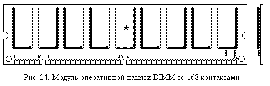

2.3.6. Модули динамических оперативных ЗУ
Оперативные запоминающие устройства всегда были ресурсом, допускающим увеличение емкости, а иногда и сокращение времени обращения, с целью повышения общей производительности ЭВМ. Совершенствование технологий изготовления оперативных ЗУ привело к тому, что стойки памяти середины 1970-х годов емкостью 512 Кбайт, размером с двустворчатый платяной шкаф, сменили маленькие платы с микросхемами размером с зажигалку. Более того, если модернизация (или, как теперь принято говорить, “апгрейд”) ЭВМ тех времен, связанная с наращиванием или заменой оперативной памяти, предполагала проведение достаточно серьезных монтажных работ, то теперь, в стандартной ситуации, замену памяти в течение 5 – 10 минут может провести даже пользователь, не являющийся специалистом по компьютерной технике.
Стандартизация интерфейсов оперативной памяти сделала возможным использование модулей памяти одних производителей в системах, собранных из компонент других производителей. Хотя, конечно, параметры и качество их могут быть различны.
Модули динамической полупроводниковой памяти прошли эволюцию от набора микросхем, устанавливаемых на системной плате и заметных по своему регулярному расположению (несколько смежных рядов одинаковых микросхем) до отдельных небольших плат, вставляемых в стандартный разъем (слот) системной платы. Первенство в создании таких модулей памяти обычно относят к фирме IBM.
Основными разновидностями модулей динамических оперативных ЗУ
с момента их оформления в виде самостоятельных единиц были:
- 30-контактные однобайтные модули SIMM (DRAM)
- 72-контактные четырехбайтные модули SIMM (DRAM)
- 168-контактные восьмибайтные модули DIMM (SDRAM)
- 184-контактные восьмибайтные модули DIMM (DDR SDRAM)
- 184-контактные (20 из них не заняты) двухбайтные модули RIMM RDDRAM).
Сокращение SIMM означает Single In-Line Memory Module – модуль памяти с одним рядом контактов, так как контакты краевого разъема модуля, расположенные в одинаковых позициях с двух сторон платы, электрически соединены. Соответственно DIMM значит Dual In-Line Memory Module – модуль памяти с двумя рядами контактов. А вот RIMM означает Rambus Memory Module – модуль памяти типа Rambus.
Кроме этих модулей имеются также варианты для малогабаритных компьютеров, для графических карт и некоторые другие.
Если микросхемы памяти физически располагаются только с одной стороны платы, то такой модуль называют односторонним, а если с двух сторон – то двухсторонним. При равной емкости модулей, у двухстороннего модуля количество микросхем больше, поэтому на каждую линию шины данных приходится большая нагрузка, чем при использовании одностороннего. С этой точки зрения односторонние модули предпочтительней двусторонних. Однако количество банков в двусторонних модулях вдвое больше, чем в односторонних, поэтому при определенных условиях и хорошем контроллере памяти двусторонний модуль может обеспечить несколько большую производительность.
На рис. 24 изображен односторонний 168-контактный 8-байтный модуль DIMM памяти SDRAM. Размеры этого модуля 133х35 мм. Микросхема, обозначенная звездочкой и пунктиром, используется в модулях, имеющих контрольные разряды и схемы контроля (см. далее). Размеры модулей SIMM несколько меньше. Модули RIMM имеют также металлическую пластину радиатора, закрывающую микросхемы.

Помимо собственно конструктивной организации и типа памяти, модули имеют также и некоторые другие различия. Одним из таких различий является возможность (или ее отсутствие) контроля хранимых данных.
Контроль может основываться на использовании дополнительных (по одному на каждый хранимый байт) битов четности (Parity bits), т.е. в этом случае каждый байт занимает в памяти по 9 бит. Такой контроль позволяет выявить ошибки при считывании хранимой информации из памяти, но не исправить их. Причем, строго говоря, нельзя и установить, когда возникла ошибка: при записи или при чтении. Кроме того, парная ошибка, хотя ее вероятность и очень мала, обнаружена не будет.
Более сложный контроль предполагает использование кодов, корректирующих ошибки – ECC (Error Correcting Codes), которые позволяют обнаруживать ошибки большей кратности, чем одиночные, а одиночные ошибки могут быть исправлены. Подобные схемы используются в серверных конфигурациях, когда требуется повышенная надежность.
Память, устанавливаемая в настольные ПЭВМ, обычно не имеет никакого
контроля.
Кроме того, известны также различные модификации схем контроля, вплоть до просто
имитирующих контрольные функции, но не осуществляющие их, например с генерацией
всегда верного бита четности.
Модули DIMM также различаются по наличию или отсутствию в них буферных схем на шинах адреса и управляющих сигналов. Не буферизованные (unbuffered) модули больше нагружают эти шины, но более быстродействующие и дешевые. Их обычно применяют в настольных ПЭВМ. Буферизованные (registered) имеют буферные регистры и, обеспечивая меньшую нагрузку на шины, позволяют подключить к ней большее количество модулей. Однако эти регистры несколько снижают быстродействие памяти, требуя лишнего такта задержки. Применяют буферизованные модули обычно в серверных системах.
Еще одной особенностью, различающей модули динамической памяти, является способ, посредством которого после включения компьютера определяется объем и тип установленной в нем памяти.
В первых ПЭВМ объем и быстродействие установленной памяти задавались переключателями (джамперами – jumpers), расположенными на системной плате.
С появлением модулей SIMM (существовали также похожие на них модули SIPP) стал использоваться так называемый параллельный метод идентификации (parallel presence detect), при котором краевой разъем модуля имел дополнительные контакты, используемые только для целей указания присутствия модуля в том слоте, где он установлен, его объема и времени обращения. В самых первых (30-контактных) модулях таких дополнительных контактов было только два, в 72-контактных модулях их стало четыре: два указывали на объем модуля и два – на время обращения. Эти контакты могли заземляться непосредственно на модуле, что позволяло различить четыре вида модулей по объему и четыре – по времени доступа.
Попытки использовать этот же прием в последующих модулях потребовали увеличения количества таких контактов, но решить все проблемы идентификации не смогли. Поэтому, начиная c модулей DIMM, используют так называемый последовательный способ идентификации (Serial Presence Detect - SPD), при котором на плату модуля устанавливается специальная дополнительная микросхема, так называемый SPD-чип, представляющая собой небольшую постоянную память на 128 или 256 байт с последовательным (I2C) интерфейсом доступа. На рис. 24 эта микросхема показана в правом нижнем углу, хотя она может располагаться и иначе. В этой микросхеме записана основная информация об изготовителе микросхемы и ее параметрах. Формат этих данных стандартный, определенный советом JEDEC (Joint Electron Devices Engineering Council), стандартов которого придерживаются все изготовители полупроводниковой памяти.